La calavera
Igualdad y fraternidad. Nadie podría decir si esa calavera es hombre o mujer, rico o pobre, creyente o ateo. En la carretera somos todos iguales.
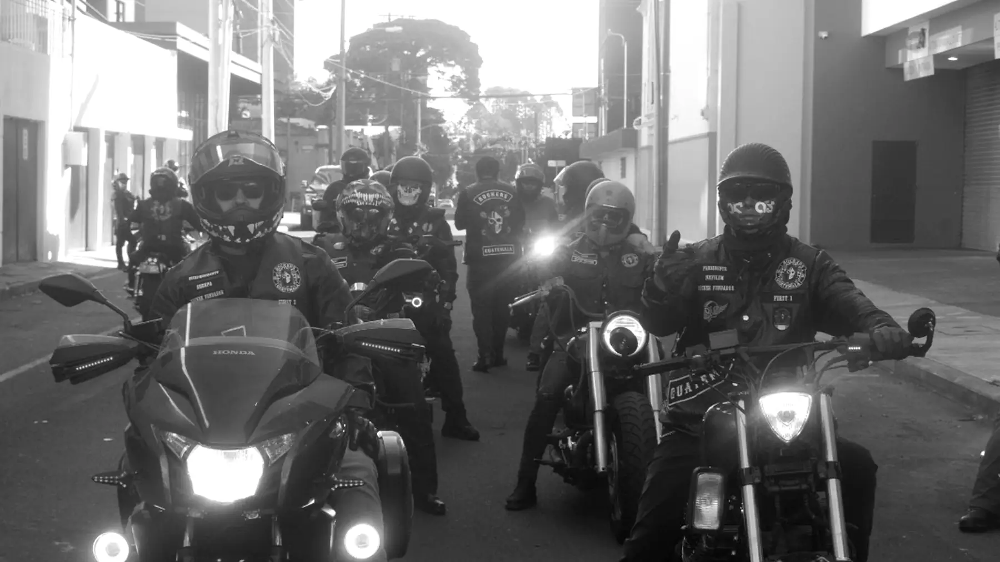
Guatemala
Since2019
No es solo un nombre, es nuestra historia.
Es nuestra forma de vivir.
Quiénes somos
Somos un moto grupo guatemalteco: amantes de la adrenalina, de las motos al estilo clásico y de una buena ruta. Nos organizamos como una asociación sin fines de lucro, con capítulos en varios puntos del país.
Nuestro nombre es un tributo al primer club de motociclistas que modificó sus máquinas a café racer: jóvenes de clase trabajadora del Reino Unido de los años cincuenta que aligeraban el peso de sus motos, bajaban el manillar y buscaban las 100 mph. De ellos heredamos tres palabras: rapidez, libertad y actitud.
Rodando desde 2019 · Identidad actual desde junio 2023
Nuestras máquinas
De la línea clásica de calle a la customización más personal. Lo que nos une no es la marca ni el estilo: es que la máquina lleve tu mano encima.
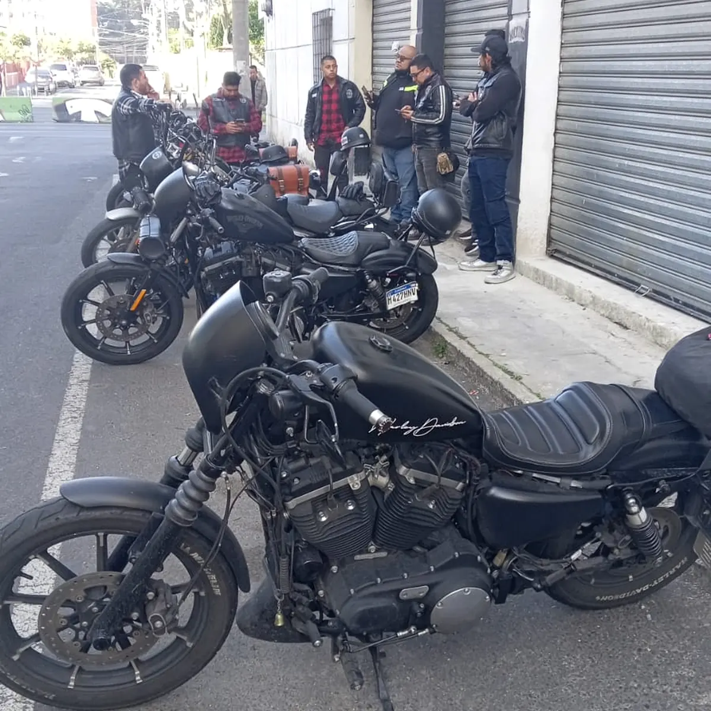
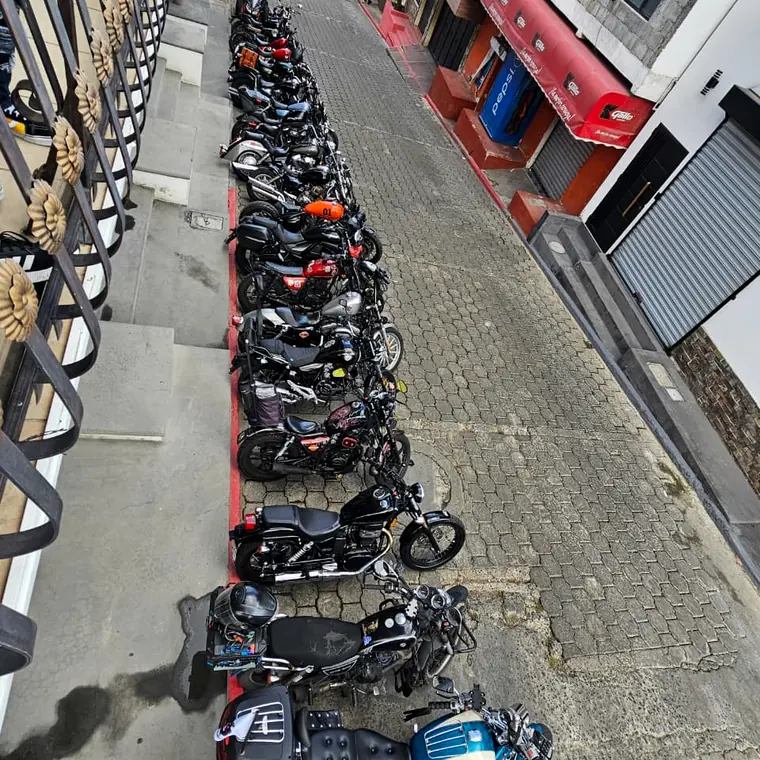
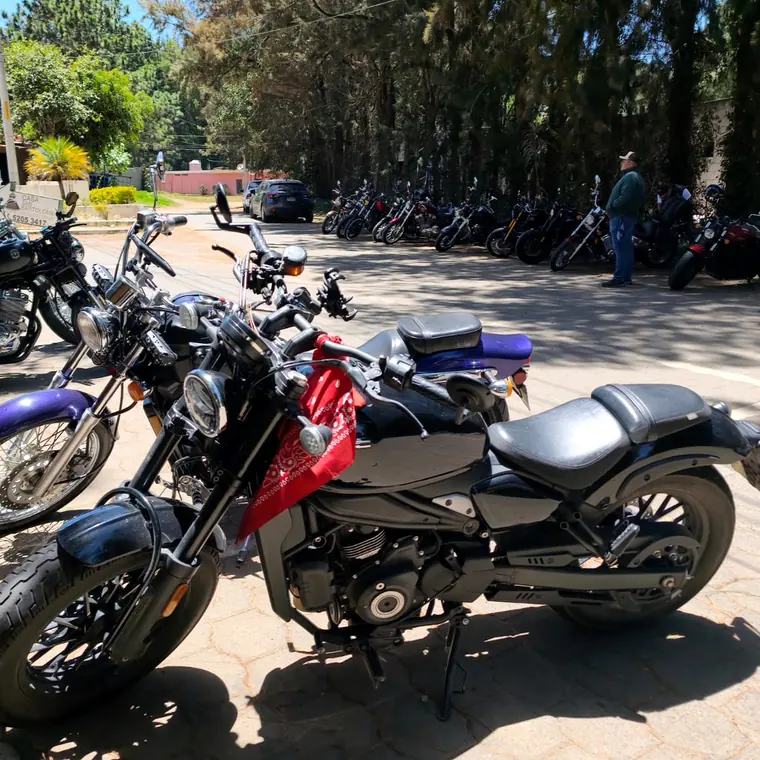
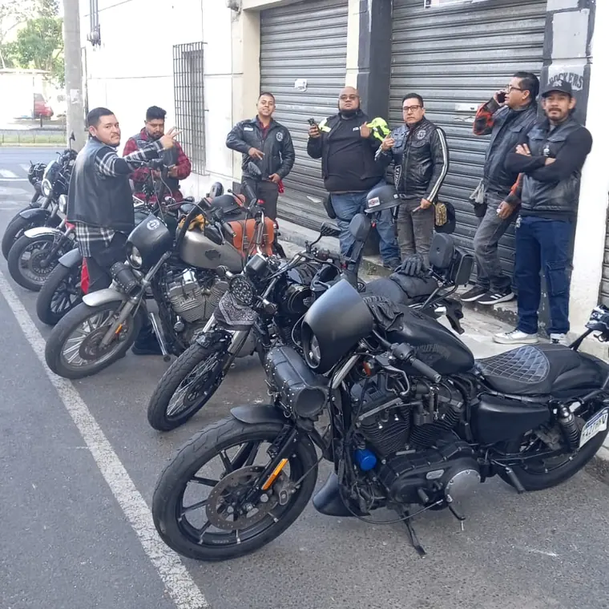
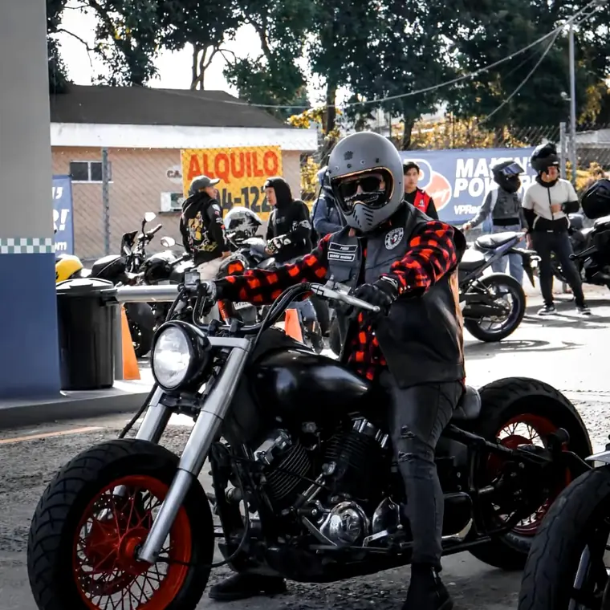
Harley-Davidson, Indian, japonesas y europeas. Sin discriminación de cilindraje.
Simbología
No es solo un emblema: es nuestra filosofía de vida. Esto representa cada pieza de nuestro escudo.
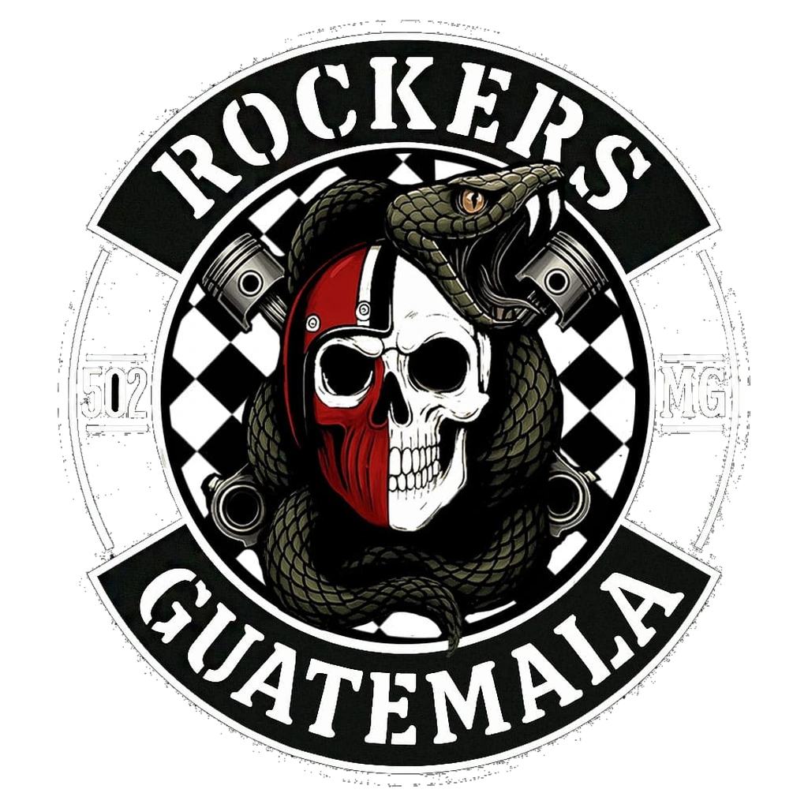
Igualdad y fraternidad. Nadie podría decir si esa calavera es hombre o mujer, rico o pobre, creyente o ateo. En la carretera somos todos iguales.
Protección, vida y fortaleza. La protección que elegimos para seguir en el camino, y la fuerza para enfrentar cualquier desafío dentro y fuera de la ruta.
Transformación, renovación y evolución. Como la serpiente muda su piel, dejamos atrás el pasado y superamos las etapas difíciles.
El impulso del motor de nuestra motocicleta y el latido del corazón del grupo. Lo que nos mueve, literal y simbólicamente.
Los blancos son los logros y la luz que nos impulsa; los negros, los retos, las caídas y los duelos. Juntos cuentan nuestra historia.
Blanco: la pureza del alma. Negro: renacimiento y poder. Rojo: la pasión. Verde olivo: la naturaleza y la esperanza.
Filosofía
Nos une lo que somos por dentro y lo que elegimos construir juntos: un camino, una familia, una misma pasión.
Rodamos juntos, vivimos libres, nos protegemos siempre.
No somos muchos, pero somos leales.
Ride together, live forever.
Estructura
Pertenecer se gana rodando. Estos son los niveles, las distinciones y los capítulos que forman el Moto Grupo.
Nivel 01
Quien acaba de llegar o acumula menos de diez rodadas. Aquí descubres si la filosofía Rockers 502 MG es la tuya.
Nivel 02
Más de diez rodadas y una identificación plena con el grupo. Es el paso previo a portar los parches del club.
Los diamantes
El éxito y la culminación de ciclos. Combina la independencia del 1 con la sabiduría del 9: el final de una etapa y el inicio de otra superior.
Rockers Guatemala. Hermandad, honor, valor y lealtad a los colores. Portarlo es la culminación de un miembro con todos sus logros.
Para quienes customizan sus propias motos. Símbolo de dedicación, ingenio y una conexión profunda con la mecánica y el diseño.
Capítulos
En la ruta
Las carreteras que hemos recorrido y la gente con la que las recorrimos.
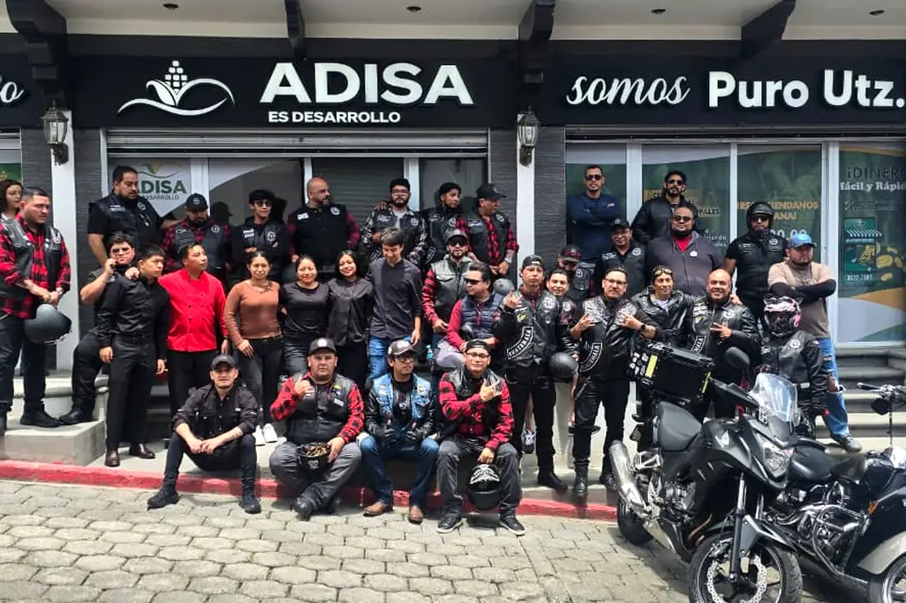
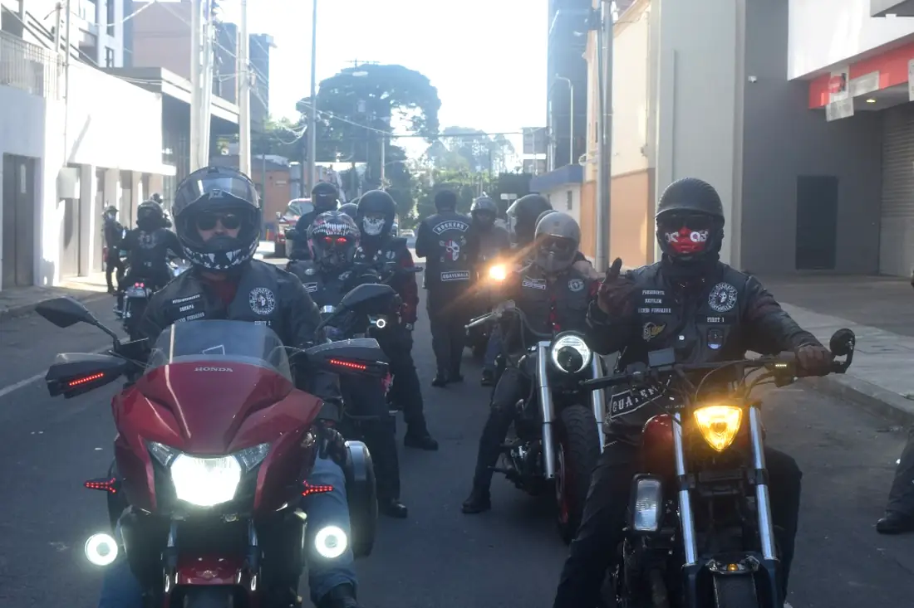
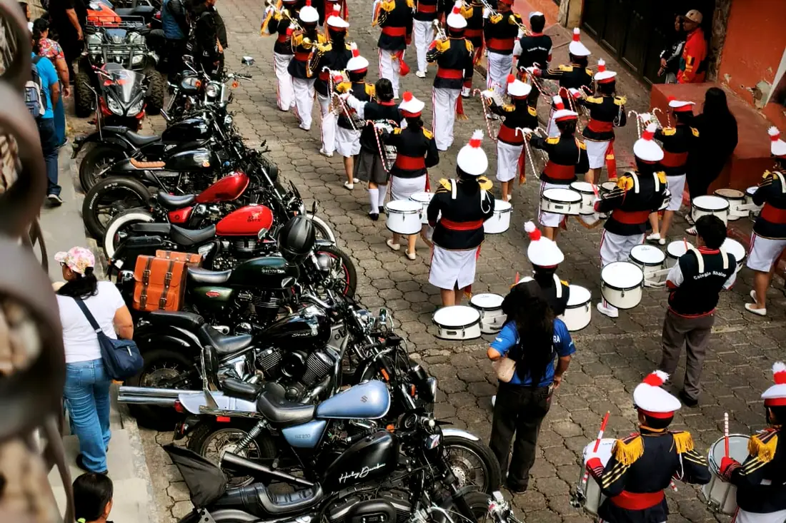
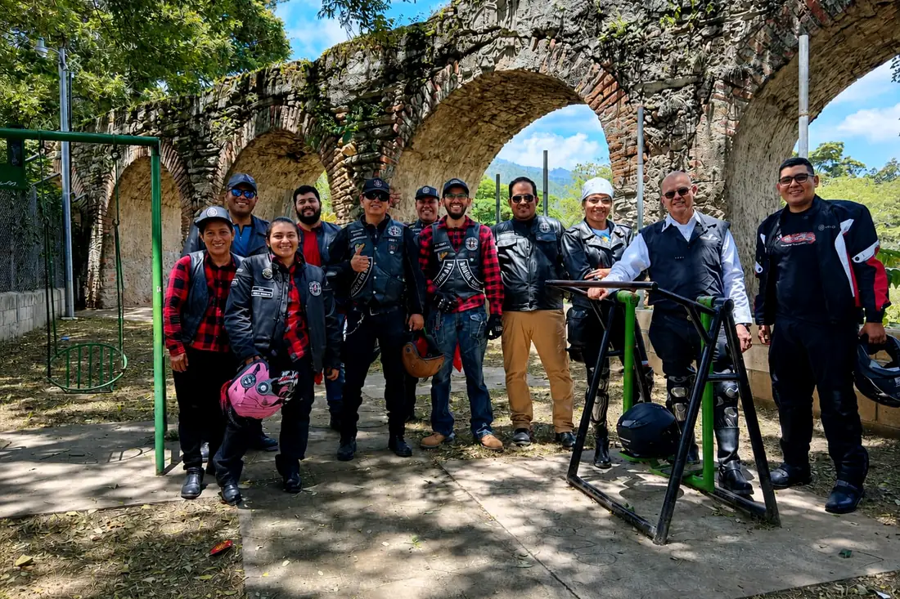
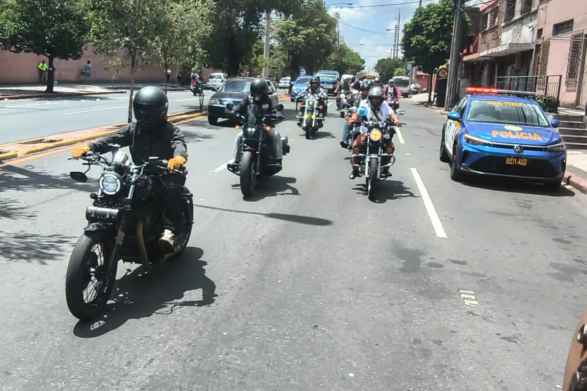
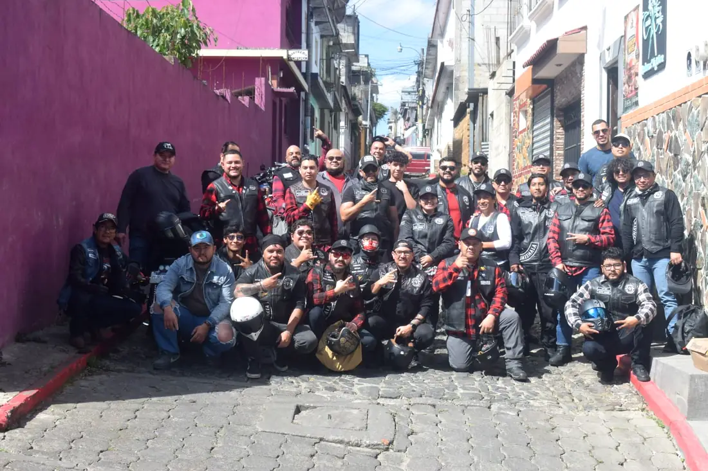
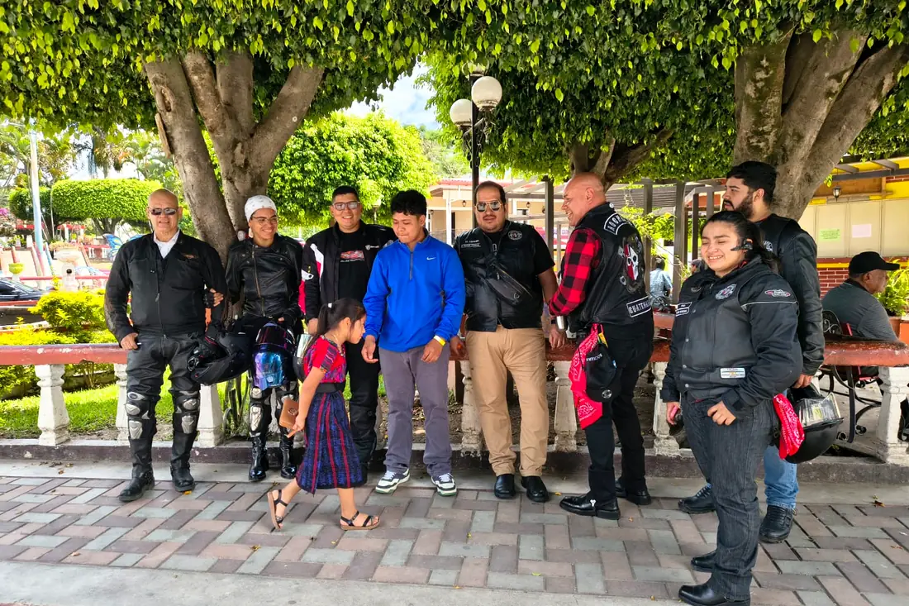
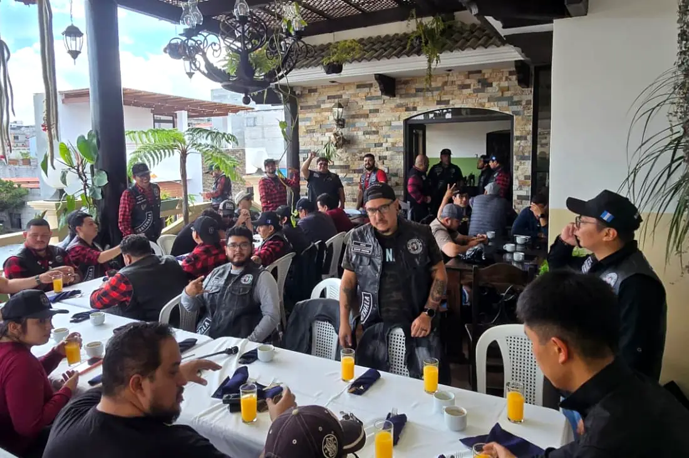
Cómo ingresar
Buscamos gente que quiera pasarla bien y rodar con propósito. Estos son los requisitos.
Motocicleta de línea clásica de calle o customizada —café racer, bobber, chopper, cruiser, tracker, brat— o al menos 50 % modificada, sin discriminación de cilindraje.
Casco en buen estado, no mayor a cuatro años, por la seguridad de todos los integrantes.
Ganas de participar en un moto grupo con visión de ayudar al prójimo.
Actitud para pasarla bien. Antes que un club, somos un grupo de amigos.
Te responde un miembro del grupo. No pedimos datos por este sitio.